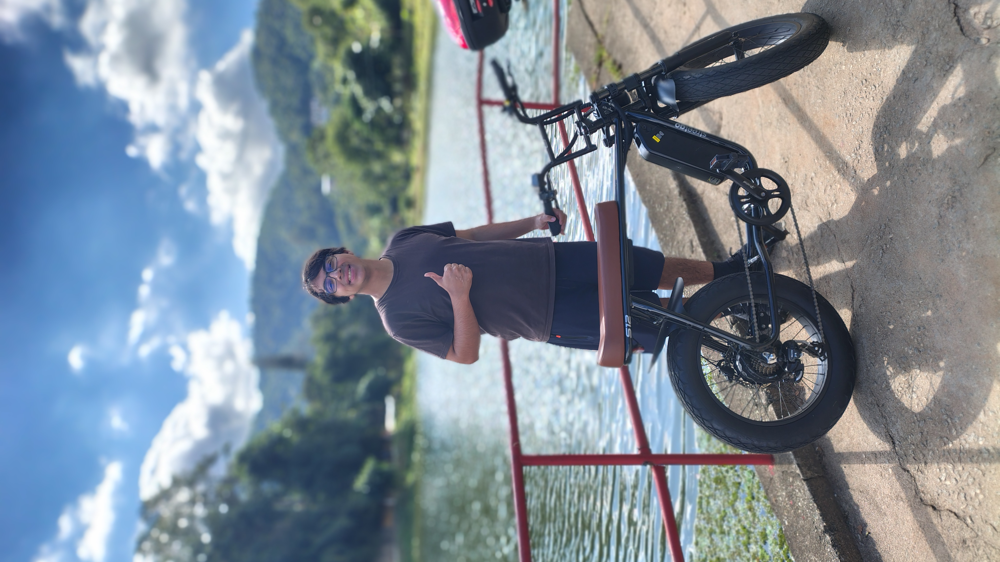

Minha trajetória do futuro Estou atualmente cursando o curso de Desenvolvimento de Sistemas no SENAI. Escolhi essa área porque tenho muito interesse em tecnologia e programação. Desde que comecei o curso, notei que o campo de desenvolvimento de sistemas é muito amplo, com muitas opções de trabalho. Eu sei que quero trabalhar com desenvolvimento de sistemas no futuro, mas ainda não decidi exatamente o que quero fazer. Existem muitas opções, como criar sites, aplicativos, sistemas para computadores, bancos de dados e outras coisas. Por enquanto, estou tentando aprender um pouco de cada coisa para ver o que mais eu gosto. Acredito que, com o tempo, vou conseguir escolher o que mais combina comigo. Sobre o curso, tenho expectativas boas. Espero que seja um curso bom, que me ensine coisas úteis e me prepare para o mercado de trabalho. Quero sair desse curso sabendo o suficiente para conseguir meu primeiro emprego na área e me sentir seguro. Também espero poder acompanhar as aulas sem muita dificuldade. Sei que não é fácil, mas estou disposto a me esforçar. Quero fazer todas as tarefas no prazo, fazer um bom trabalho e aproveitar ao máximo essa chance. Além disso, espero aprender não só coisas técnicas, mas também a ser responsável, organizar meu tempo e ser disciplinado. Sei que essas coisas são importantes em qualquer trabalho. Pensando no futuro, daqui a 10 anos, espero estar bem, com dinheiro suficiente e uma vida estável. Quero estar trabalhando com desenvolvimento de sistemas, em um emprego bom, com um salário que me permita viver bem. No geral, meu objetivo é fazer uma carreira sólida em desenvolvimento de sistemas, começando com esse curso no SENAI e aproveitando todas as chances que tiver.
